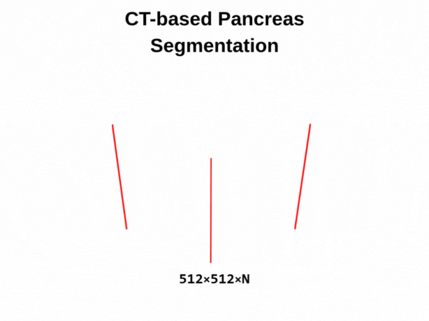
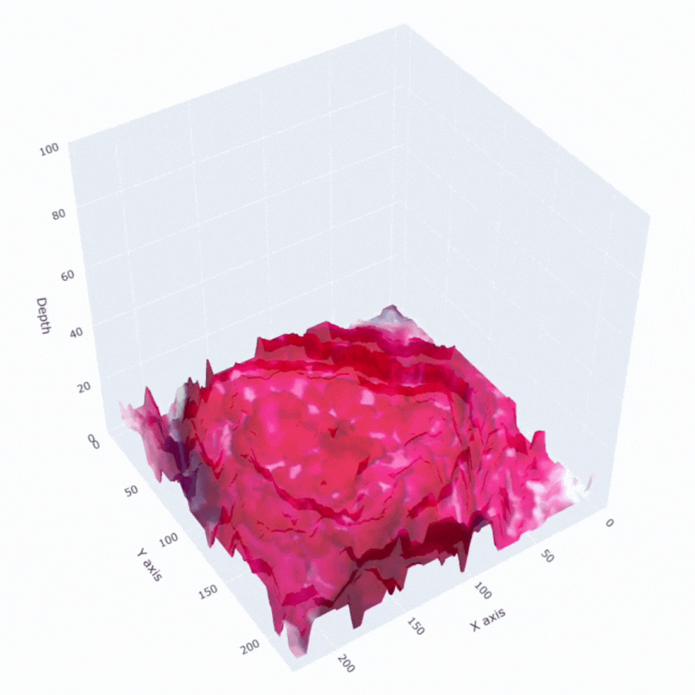

Bilişim Etiği
Trabzon Üniversitesi
2025 - 2026 Güz Dönemi
Dr.
Öğr. Üyesi
Ramazan Özgür DOĞAN
Öğretim Üyesi
Akademik Yolculuk
Lisans, yüksek lisans ve doktora derecelerini Karadeniz Teknik Üniversitesi Bilgisayar Mühendisliği Bölümü'nden almıştır. Doktora sürecinde derin öğrenme yaklaşımları ile 3B Bilgisayarlı Tomografi(CT) görüntülerinden Pancreas ve Pancreas Tümörü segmentasyonu üzerine uzmanlaşmıştır.
Uluslararası Tecrübe
- The Youngstown State University'de yapay zeka ve CNN tabanlı derin öğrenme mimarileri üzerine doktora sırası araştırmalarını yürütmüştür.
- The Ohio State University'de TÜBİTAK 2219 kapsamında multimodal yapay zeka ve görsel transformer mimarileri üzerine post-doktora araştırmaları yürütmüştür.
Uzmanlık Alanları
- Derin Öğrenme & Görsel Transformer mimarileri
- Biyomedikal Görüntü Analizi & Multimodal AI
- Swin Transformer & PVT tabanlı modelleme
- Yapay Zeka Destekli Karar Mekanizmaları
"Trabzon Üniversitesi bünyesinde Yapay Zeka Mühendisliği öğrencilerine yenilikçi ve araştırma temelli bir eğitim ortamı sunmayı hedeflemektedir."
Öne Çıkan Yayınlar


01. Temeller ve İlkeler
02. Mahremiyet ve Hukuk
03. Teknoloji ve Gelecek
Etik Yarınlar İçin.
Trabzon Üniversitesi Bilişim Etiği